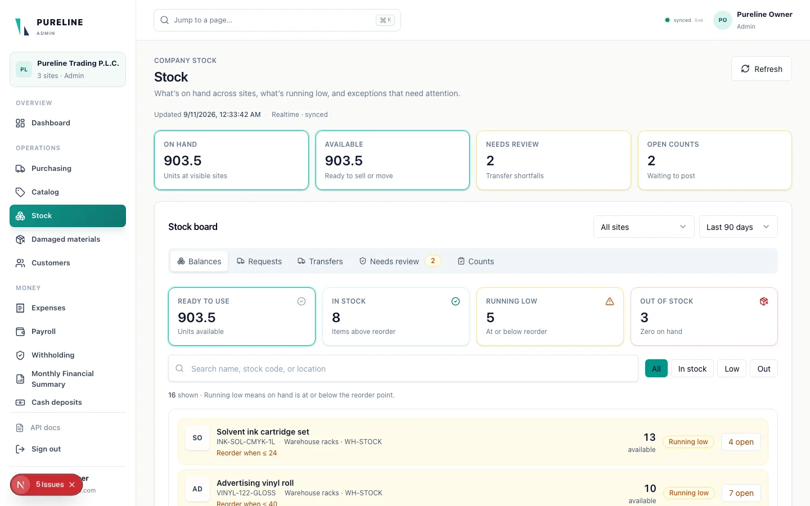

01Business systems2024–2026
CRM & inventory platform
Co-developed and tested with the Pinnacle AI team. A shared operations workspace for importers and distributors: purchasing, warehouse stock, shop sales, and controlled transfers.
Next.js · React · TypeScript · Supabase / PostgreSQLLocal MVP · in developmentView case study